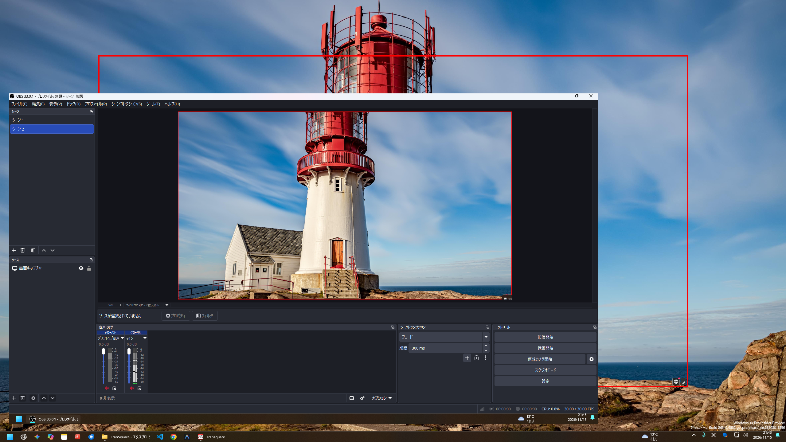

MH-TranSquare
画面上の指定領域をシンプルに枠表示・強調できるツール

概要
MH-TranSquare は、ゲーム配信や作業配信、画面録画、プレゼンテーションにおいて、「画面上のどこが OBS Studio 等で配信・録画されているか」や「視聴者に注目してほしい領域」をシンプルな枠線で表示できる軽量Windowsオーバーレイツールです。
枠の内側は完全なクリックスルー（マウス透過）に対応しているため、背後のゲームやブラウザ、制作アプリの操作を一切妨げません。さらに、OBS Studio（WebSocket）と連携してクロップ範囲を自動同期したり、配信中・録画中のステータスに応じて枠の色を自動変化させたりすることも可能です。
主な機能
- 完全クリックスルー（枠内すり抜け操作）：枠の内側はマウス操作が背後に透過するため、配信中もゲームや作業をそのまま操作できます。
- 誤操作防止（移動・サイズロック）：起動時は移動とサイズ変更がロックされており、配信中のうっかりドラッグによる枠ズレを防ぎます。
- Altキーによるグリッド吸着：
Altキーを押しながら移動・リサイズすると、指定間隔（10 / 20 / 50 / 100 px）で綺麗にスナップします。 - 大型HUDリアルタイム表示：移動・リサイズ中にディスプレイ左上からの座標（
X / Y）とサイズ（幅 × 高さ）を画面中央に大きく表示します。 - 一括スナップ配置 ＆ プリセット：画面の角・中央へのワンクリック配置や、4つのユーザープリセット保存、OBS向け既定解像度（FHD / HD / 1:1 / SD）への切り替えに対応しています。
- リアルタイムホバープレビュー：枠の太さ（2〜8px）・不透明度（10%〜100%）・色（赤 / 青 / 緑 / 黄 / 白）をメニューにマウスを乗せるだけで即座にプレビューできます。
- OBS Studio WebSocket 連携：OBSの画面キャプチャのクロップ値を枠へ読み込んだり、枠の移動・リサイズをOBSへ自動同期したりできます。配信・録画状態に応じた枠色の自動変化にも対応しています。
- ローカル完結 ＆ 多言語対応：設定はすべてローカル端末に保存され外部送信は行いません。日本語 / English の切り替えに対応しています。
基本的な使い方
- 起動する：BOOTH（ポータブル版）はZIPを展開して
MHTranSquare.exeを実行します（インストール不要）。Microsoft Store版はインストール後にスタートメニュー等から起動します。 - 枠の位置とサイズを合わせる：枠右下の
⚙ボタン（または枠線上で右クリック）からメニューを開き、「移動をロック」「サイズ変更をロック」のチェックを外します。枠線上をドラッグして移動し、右下の四角いグリップをドラッグしてサイズを調整します。 - 誤操作を防ぐためロックする：位置とサイズが決まったら、メニューから「移動をロック」「サイズ変更をロック」をオンに戻しておくと、配信中に誤って動かしてしまう心配がありません。
- メニューを開く・枠を隠す：設定変更は枠右下の
⚙ボタン、枠線の右クリック、または画面右下（タスクトレイ）アイコンの右クリックから行えます。タスクトレイアイコンを左クリックすると、枠の表示／非表示を素早く切り替えられます。 - OBS Studio 等での活用：OBSの「画面キャプチャ」のクロップ（切り抜き）範囲の目安として使えるほか、OBS連携を有効にすれば枠の動きに合わせてOBS側のクロップ数値を自動更新できます。
操作方法 ＆ クイック操作
マウス操作とタスクトレイから、枠の調整や表示切り替えを直感的に行えます。
| 枠線上を左ドラッグ | 枠を自由に移動（移動ロック解除時） |
|---|---|
Alt + 左ドラッグ |
指定したグリッドサイズ（10 / 20 / 50 / 100 px）に吸着しながら移動・リサイズ |
| 右下の四角グリップをドラッグ | 枠のサイズを変更（サイズロック解除時。Alt キー併用でグリッド吸着） |
右下の ⚙ ボタン / 枠線右クリック |
設定メニューを表示（⚙ ボタンは左クリック・右クリック両対応） |
| タスクトレイアイコン左クリック | 枠の表示 / 非表示をトグル切り替え |
| タスクトレイアイコン右クリック | 設定メニューを表示 |
メニュー・設定項目の詳細
設定メニュー（枠右下の ⚙ ボタン、枠線右クリック、またはタスクトレイ右クリック）から以下の項目をカスタマイズできます。設定は終了時および変更時に自動で保存されます。
ロック ＆ 表示制御
- 移動をロック / サイズ変更をロック：枠のドラッグ移動やグリップによるリサイズを禁止して誤操作を防ぎます。
- 常に最前面：他のウィンドウの上に枠を常に表示します。
- タスクバーに表示：タスクバーへのアプリアイコン表示をオン／オフします（オフにしてもタスクトレイから操作できます）。
- 枠を隠す (非表示) / 枠を表示する：枠の表示状態を切り替えます。
枠位置（一括スナップ配置）
現在のディスプレイの「角（左上 / 右上 / 左下 / 右下）」や「中央（画面中央 / 上・左右中央 / 下・左右中央 / 左・上下中央 / 右・上下中央）」へワンクリックで枠を移動します。マルチモニター環境では、現在枠があるモニターを基準に配置されます。
プリセット ＆ 既定の解像度
- ユーザープリセット（1〜4）：現在の枠の位置とサイズを最大4つまで保存し、ゲームや配信シーンに合わせてワンクリックで呼び出せます。「プリセットをすべてクリア...」で一括削除も可能です。
- 既定の解像度 (OBS用)：
1920 × 1080 (FHD 16:9)、1280 × 720 (HD 16:9)、1080 × 1080 (1:1 正方形)、854 × 480 (SD 16:9)にサイズを一発変更できます。
Alt吸着グリッドサイズ
Alt キーを押しながら移動・リサイズする際のスナップ間隔を 10 px / 20 px (標準) / 50 px / 100 px から選択できます。
枠の太さ・不透明度・色（ホバープレビュー対応）
- 枠の太さ：
2 px/4 px/6 px/8 pxから選択できます。 - 枠線の不透明度：
100% (標準)〜10%の10段階で調整できます。 - 枠の色：
赤 (Red)/青 (Cyan)/緑 (Lime)/黄 (Yellow)/白 (White)から選択できます。
これらの項目はメニューにマウスカーソルを合わせるだけでリアルタイムにプレビューされ、クリックすると確定します。
OBS Studio 連携（WebSocket）
OBS Studio の「ツール ＞ WebSocketサーバー設定」を有効にすることで、MH-TranSquare とOBSをリアルタイムに連携できます。「OBS 連携設定...」から以下の設定を行えます。
- 接続設定：ホスト（初期値：
127.0.0.1）、ポート番号（初期値：4455）、パスワードを設定し、「接続テスト」で疎通確認できます。 - 配信中・録画中に枠の色を自動連動する：OBSの状態に応じて枠の色が自動変化します（配信中：緑、録画中：赤、配信と録画の両方：紫、待機中：設定した通常色）。
- 枠の位置・サイズ変更をOBSのクロップに自動同期する：MH-TranSquare の枠を動かしたりサイズ変更したりすると、OBS側の該当ソースのクロップ（切り抜き）数値がリアルタイムに更新されます。
- OBS からクロップを読み込む：OBS接続時にメニューの「OBS からクロップを読み込む」を押すと、OBS側で現在設定されているクロップ位置・サイズに合わせて枠をぴったり吸着させます。
マルチモニター環境でのご注意：クロップ位置は「現在枠があるモニターの左上」を基準に計算されます。OBS連携を使う場合は、OBSの「画面キャプチャ」ソースで映しているモニター内に枠を置いてご利用ください（モニター境界をまたぐとはみ出た分が切り落とされ、別のモニターへ枠を完全に移すとそのモニター基準の座標でOBS側の映像が切り抜かれます）。なお、同期対象は現在のシーン内の Transquare または 画面キャプチャ / Display Capture を含むソースが優先されます。
言語・設定のリセット・その他
- 言語 (Language)：
日本語/Englishをいつでも切り替えられます（初回起動時はOS言語を自動判定）。 - 設定をリセット...：位置・サイズ・表示スタイルを初期状態に戻します。
- MH-TranSquare について... / ヘルプ：バージョン情報・ライセンス確認や公式ヘルプページを開けます。
主な仕様・動作環境
| 対応OS | Windows 10 / Windows 11 (64bit) |
|---|---|
| 配布形態 | BOOTH（ポータブル版・ランタイム不要の自己完結型） / Microsoft Store |
| 設定ファイルの保存先 | %AppData%\MahorobaLab\MHTranSquare\settings.json |
| データ送信 | なし（すべてローカル処理。BOOTH版のみ起動時にGitHub公開JSONで更新確認を実施。OBS連携はローカルのWebSocket通信を使用） |
| 商用・配信利用 | 個人利用・商用利用・収益化配信での利用可能（クレジット表記不要） |
関連ヘルプ・トラブルシューティング
SmartScreenの警告が出た場合や、OBS Studioでの透過・キャプチャ設定、アンインストール手順については、ポータルの共通ヘルプ・よくある質問（FAQ）をご参照ください。